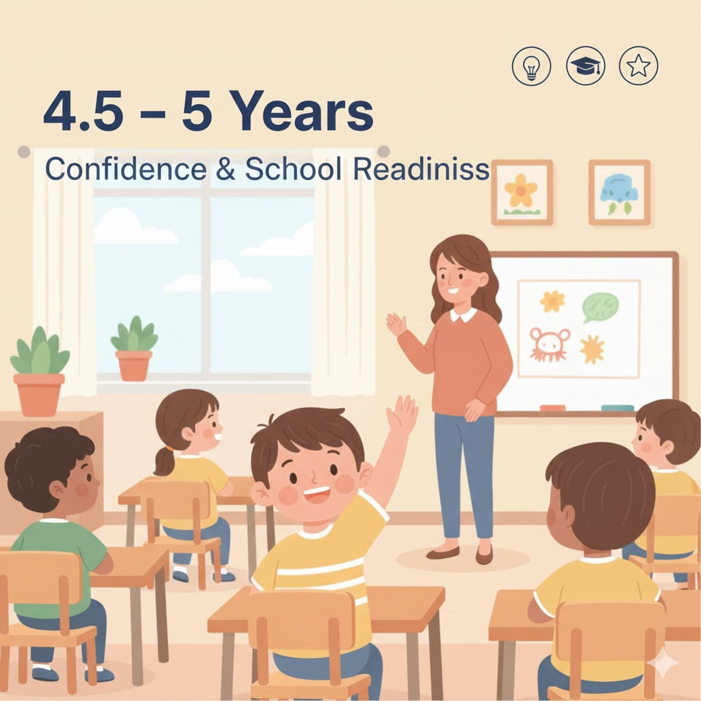

4.5 – 5 سنوات
دي مرحلة “الاستعداد الاجتماعي والنفسي” قبل المدرسة: استقلال بسيط، التزام بقواعد، ثقة بالنفس، وتدريب على الانتظار والدور.

مهم: الاستعداد للمدرسة “نفسي وسلوكي” قبل ما يكون أكاديمي.
طفل يعرف يلتزم ويتواصل… هيتعلم أسرع.